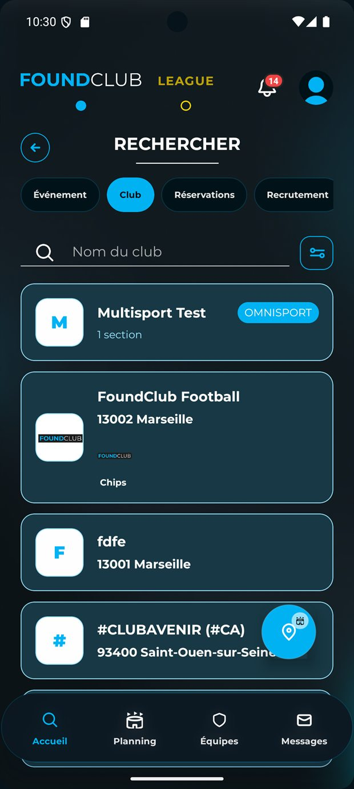
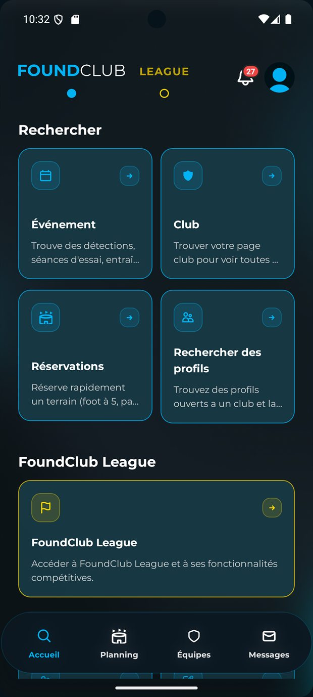
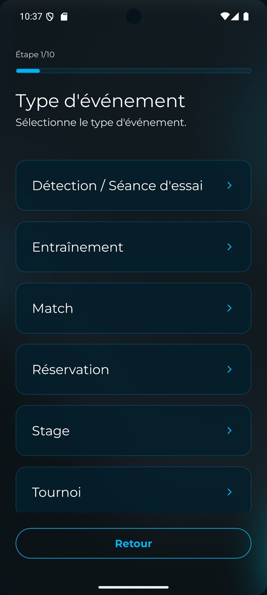
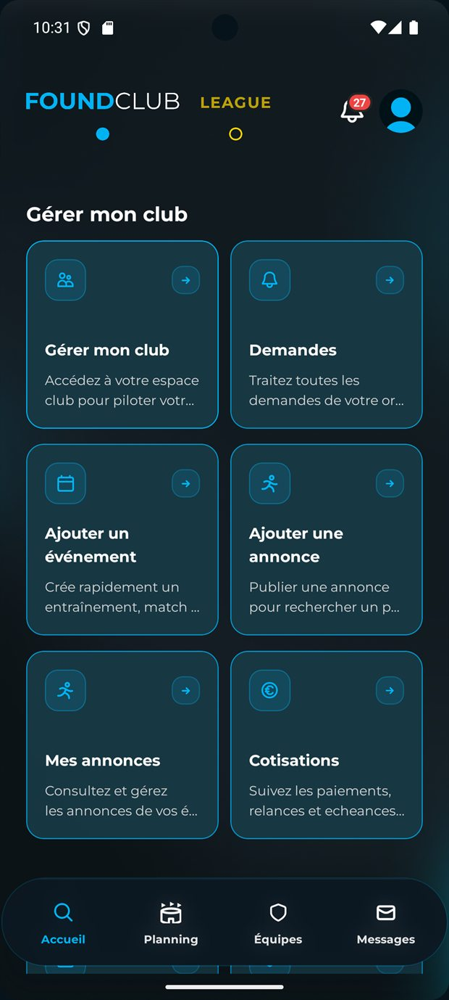
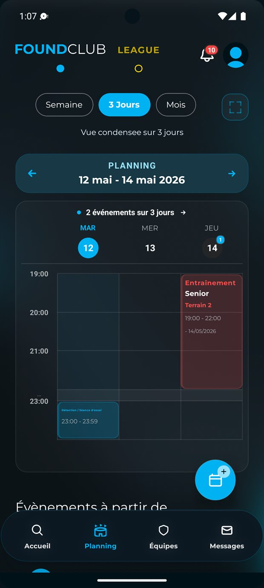
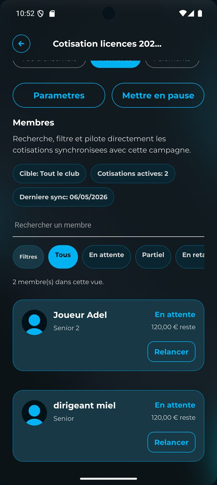

Support secondaire
Les guides FoundClub restent utiles, mais la découverte du produit commence maintenant sur la web app.
Utilisez ces guides pour accompagner un joueur, un entraîneur ou un dirigeant. Pour explorer le produit réel, l'annuaire et la gestion club, partez d'abord vers foundclub.app.

Trouver un club, repérer les bons événements, rejoindre une équipe et suivre sa vie sportive depuis l'app.

Rejoindre un club, suivre son équipe, créer des événements et coordonner les réponses du groupe.

Piloter le club, ses demandes, ses équipes, ses sponsors, ses cotisations et les parcours du quotidien.
Avant d'ouvrir un guide
Le bon réflexe est souvent de regarder d'abord la web app ou les pages produit FoundClub, puis d'utiliser le guide comme support d'accompagnement. C'est particulièrement vrai pour la gestion club, le planning et les événements.

